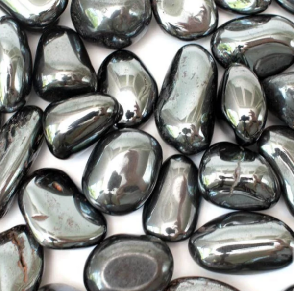
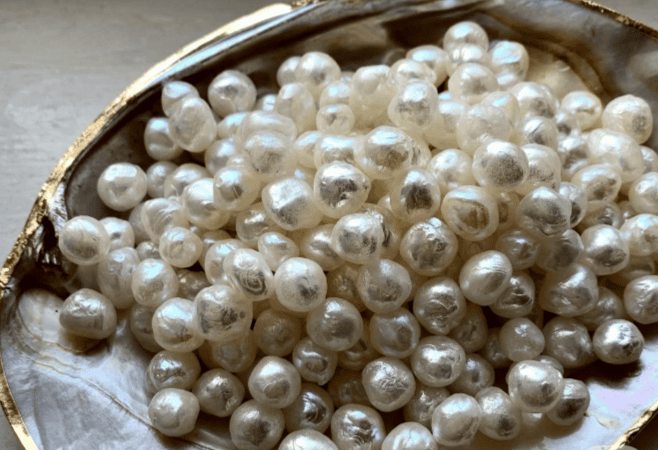
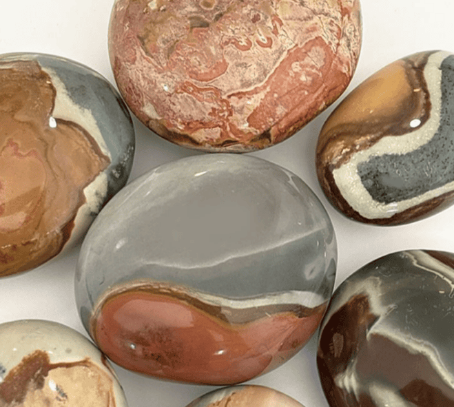
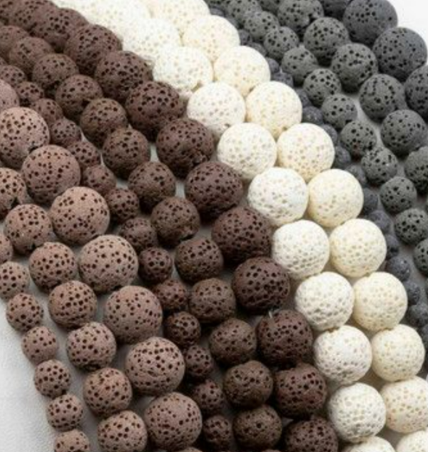
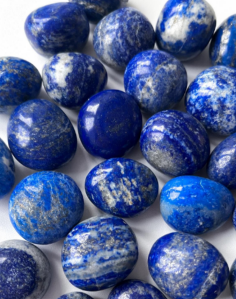
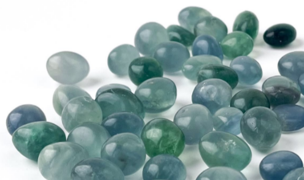
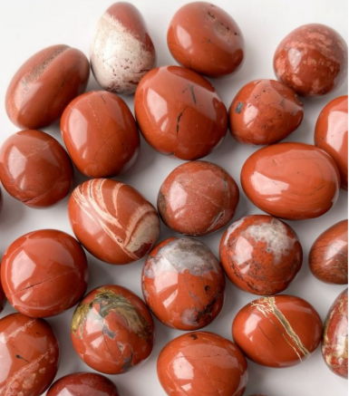

Браслет
Браслет из натуральных камней под размер запястья, оттенки и личный запрос.
Украшения ручной работы из натуральных камней
Олеся Чукомина создаёт украшения из натуральных камней и жемчуга — с подбором по дате рождения, личному запросу, размеру и желаемым оттенкам.
О мастере
Я создаю браслеты, колье, серьги и украшения из натуральных камней и жемчуга. Каждое изделие собирается вручную — с вниманием к вашей истории, запросу, размеру, цветам и природной красоте камней.
Украшение может стать личным талисманом, подарком близкому человеку или красивым акцентом в образе.
Форматы заказа
Можно выбрать готовое украшение по примеру или заказать индивидуальный подбор под человека, дату рождения, цветовую гамму и запрос.
Вы можете выбрать украшение из готовых работ или заказать похожее по фото. Мастер адаптирует размер, фурнитуру и детали под вас.
Подходит, если:Стоимость: от 2 000 ₽
Украшение собирается под конкретного человека: по дате рождения, личному запросу, желаемой цветовой гамме, размеру, фурнитуре и назначению украшения.
Подходит, если:Стоимость: рассчитывается индивидуально
Камни
Каждый камень отличается оттенком, фактурой и природным рисунком. При индивидуальном подборе мастер учитывает не только внешний вид, но и свойства камня, дату рождения, пожелания по цвету и задаче украшения.

Ассоциируется со спокойствием, мягкостью и внутренней гармонией.

Ассоциируется с защитой, собранностью, устойчивостью и уверенностью.

Символ мягкости, женственности, чистоты и внутреннего достоинства.

Считается камнем очищения, баланса, ясности и усиления энергии.

Считается камнем внутренней силы, устойчивости и заземления.

Связывают с ясностью мыслей, спокойствием и умением принимать решения.

Связывают с концентрацией, ясностью ума, обучением и обработкой большого объёма информации.

Ассоциируется с устойчивостью, защитой, жизненной энергией и внутренней опорой.
Один и тот же камень может отличаться по цвету, размеру, форме и оттенку. За счёт этого меняется не только внешний вид украшения, но и его настроение. Поэтому украшения по дате рождения и индивидуальному запросу собираются персонально: с учётом камней, фурнитуры, размера, цветовой гаммы и задачи, которую человек хочет вложить в изделие.
Информация о свойствах камней носит ознакомительный характер и не заменяет медицинские рекомендации.
Индивидуальный подбор
Олеся может подобрать камни индивидуально: по дате рождения, личному запросу, желаемым оттенкам, размеру и назначению украшения.
Подобрать украшениеПримеры украшений
Здесь собраны украшения, которые уже были созданы мастером. Можно заказать похожее изделие, собрать комплект или оформить индивидуальный подбор по дате рождения, цвету, размеру и личному запросу.

Тип: серьги
Аккуратные серьги из натуральных материалов и фурнитуры. Можно подобрать под колье, браслет или собрать комплект в едином стиле.
от 1 000 ₽ Заказать похожее
Тип: колье
Камни: жемчуг.
Жемчуг традиционно связывают с женственностью, мягкостью, уверенностью и защитой на жизненном пути.
Детали: длина 45 см, ювелирный трос, жемчужины 6–8 мм, замок-концевик.
4 000 ₽ Заказать похожее
Тип: колье
Камни: жемчуг.
Нежное колье с замком-тогл и съёмной подвеской из барочного жемчуга. Подойдёт для образа, подарка или особого случая.
Детали: длина 40 см.
3 500 ₽ Заказать похожее
Тип: колье
Камни: индийская яшма, лава.
Украшение в природных оттенках с выразительным характером. Подойдёт как самостоятельный акцент или часть комплекта.
Детали: длина 57 см + 5 см, ювелирный трос, замок-карабин, бусины 8 мм и 4×12 мм.
4 000 ₽ Заказать похожее
Тип: колье
Камни: перламутр, лазурит.
Перламутр традиционно связывают с мягкостью, женственностью, внутренней гармонией и бережной защитой. Такое колье можно носить как нежный акцент на каждый день или как украшение с личным смыслом.
Детали: длина 50 см + 5 см, замок-карабин, подвеска-сердце из перламутра.
стоимость уточняется индивидуально Заказать похожее
Тип: комплект
Камни: турмалиновый кварц, прозрачный кварц, арбузный турмалин, родонит, лава, гематит.
Комплект в единой цветовой гамме. Арбузный турмалин традиционно связывают с гармонией, мягкостью и внутренним балансом.
Детали: браслет — размер 15 см, бусины 8–10 мм, галтовка, мемори*. Колье — 43–45 см, бусины 8–10 мм, мемори*.
7 000 ₽ Заказать похожее
Тип: браслет
Камни: прозрачный кварц, авантюрин тёмно-синий.
Авантюрин традиционно связывают с интеллектом, сосредоточенностью, ясностью мышления и лёгкостью во взаимодействии с другими людьми.
Детали: бусины 3 мм и 8 мм, мемори*.
стоимость уточняется индивидуально Заказать похожее
Тип: браслет
Камни: зелёный кошачий глаз.
Зелёный кошачий глаз традиционно связывают с восстановлением сил, расслаблением, снижением стресса и спокойным сном.
Детали: мемори*, бусины 8 мм.
стоимость уточняется индивидуально Заказать похожее
Тип: браслет
Камни: солнечный камень, лава.
Солнечный камень традиционно связывают с жизненной энергией, хорошим настроением, активностью и внутренним теплом.
Детали: бусины разноформенные 6–8 мм, мемори*.
2 500 ₽ Заказать похожее
Тип: браслет
Камни: клубничный кварц, лава.
Клубничный кварц традиционно связывают с любовью, гармонией, радостью и мягкой женственной энергией.
Детали: размер 18 см + 4 см, ювелирный трос, замок-карабин.
2 000 ₽ Заказать похожее
Тип: браслет
Камни: индийская яшма, лава, гематит.
Индийскую яшму традиционно связывают с защитой от негативной энергии и внутренней устойчивостью.
Детали: размер 15 см, бусины 8 мм, мемори*.
2 500 ₽ Заказать похожее
Тип: браслет
Камни: белый агат.
Белый агат традиционно связывают со спокойствием, мягкостью и внутренней гармонией.
Детали: размер 17 см + 4 см, бусины 8 мм, мемори*, замок-карабин.
2 000 ₽ Заказать похожее
Тип: браслет
Камни: прозрачный кварц, горный хрусталь.
Прозрачный кварц традиционно связывают с ясностью, внутренним балансом и очищением пространства вокруг себя.
Детали: размер 15 см + 4 см, бусины 10 мм.
2 000 ₽ Заказать похожее
Тип: браслет
Индивидуальный браслет с подбором камней по дате рождения, личному запросу, оттенкам и желаемому настроению украшения.
Детали: бусины 8 мм, на резинке.
стоимость рассчитывается индивидуально Заказать похожее
Тип: браслет
Камни: флюорит, лава, нефрит, прозрачный кварц.
Украшение собрано под личный запрос — с подбором камней, оттенков и сочетаний.
Детали: бусины 8 мм, на резинке.
стоимость рассчитывается индивидуально Заказать похожее
Тип: браслет
Камни: флюорит.
Флюорит традиционно выбирают для концентрации, ясности мыслей и работы с большим объёмом информации.
Детали: бусины 4 мм и 8 мм, на резинке.
стоимость рассчитывается индивидуально Заказать похожее

Тип: браслет
Камни: чёрный агат, перламутр, лава, гематит.
Чёрный агат традиционно связывают с защитой, устойчивостью и внутренней опорой.
Детали: бусины 6 мм и 4 мм, ювелирный трос, замок-карабин.
2 000 ₽ Заказать похожее

Тип: браслет
Камни: афганский лазурит, прозрачный кварц, горный хрусталь.
Афганский лазурит традиционно связывают с ясностью, принятием решений и внутренней уверенностью.
Детали: ювелирный трос, замок-карабин.
2 000 ₽ Заказать похожее
Тип: браслет
Камни: тигровый глаз, афганский лазурит, лава.
Тигровый глаз традиционно связывают с уверенностью, защитой и силой движения вперёд.
Детали: ювелирный трос, замок-карабин.
2 000 ₽ Заказать похожее
Тип: браслет
Камни: лазурит, лава.
Лазурит традиционно связывают со спокойствием, ясностью мыслей и внутренней гармонией.
Детали: ювелирный трос, замок-карабин.
2 000 ₽ Заказать похожее
Тип: браслет
Подбор камней для тех, кто хочет больше собранности, уверенности, движения к целям и поддержки в любимом деле.
Детали: состав и стоимость зависят от выбранных камней, размера и фурнитуры.
стоимость рассчитывается индивидуально Заказать похожееВсе украшения можно повторить в похожем стиле, но точное совпадение оттенков и рисунка камней не всегда возможно: натуральные камни отличаются по цвету, форме, размеру и внутреннему рисунку.
Стоимость зависит от выбранных камней, размера изделия, фурнитуры, сложности сборки и того, нужен ли индивидуальный подбор по дате рождения или личному запросу.
Если вы не знаете, какое украшение выбрать, оставьте заявку и напишите желаемый цвет, повод, размер и для кого изделие — для себя или в подарок. Мастер подскажет подходящий вариант.
Пояснение
Мемори* — это проволока с памятью формы. Она сохраняет заданную форму и возвращается к ней после растяжения или скручивания. Благодаря жёсткой основе браслет часто не требует замка или застёжки — он просто надевается на руку. По такому же принципу может носиться и колье.
Стоимость
Стоимость украшения рассчитывается индивидуально и зависит от:
Готовые украшения и повторы по примеру обычно имеют фиксированную или базовую стоимость. Индивидуальные изделия, в том числе с подбором по дате рождения, рассчитываются отдельно.
Размер
Чтобы украшение красиво сидело и было комфортным, выберите подходящий размер для браслета или колье.
Измерьте обхват запястья сантиметровой лентой без запаса. При сборке мастер добавит небольшую прибавку на комфортную посадку.
Для колье можно выбрать длину 40 см, 45 см или 50 см. Если вы не уверены, какой вариант подойдёт лучше, мастер подскажет по посадке, образу и типу украшения.
Заказ
Укажите имя, контакт для связи, тип украшения, размер, фурнитуру, цветовую гамму и пожелания.
Расскажите, что хотите: браслет, колье, серьги или подбор по дате рождения
Если вы сомневаетесь с камнями, цветом, размером, фурнитурой или форматом украшения, укажите это в пожеланиях — мастер поможет с выбором.
Олеся согласует детали, стоимость и срок
Украшение создаётся вручную
Вы получаете готовое изделие
Оплата и безопасность
Оплата и условия заказа обсуждаются индивидуально после согласования украшения, размера, материалов и сроков.
Часть украшений создаётся как готовые авторские сочетания камней — по цвету, форме и настроению. Индивидуальные изделия требуют более детального подбора под человека, дату рождения, запрос, размер и фурнитуру, поэтому их стоимость может отличаться.
Индивидуальный заказ
Расскажите, какое украшение хотите, а мастер подскажет по камням, размеру и деталям.
Контакты
Напишите мастеру в Telegram, чтобы уточнить наличие, подобрать камни или заказать украшение по индивидуальному запросу.